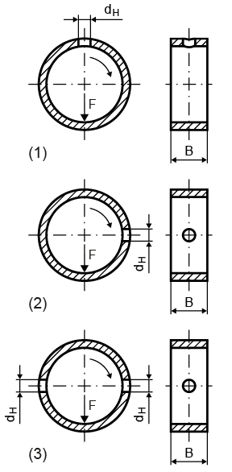
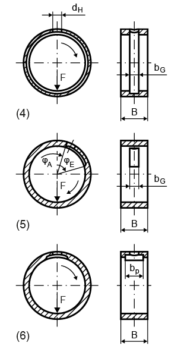
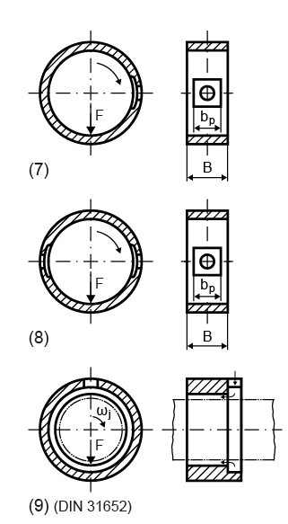

|
|
|


润滑布置
不同的润滑布置如接下来的三幅图所示。

图 29.4：1：一个润滑孔，与载荷方向相对。2：一个润滑孔，位于与载荷方向成 90° 的位置。3：两个润滑孔，位于与载荷方向成 90° 的位置。

图 29.5：4：润滑槽（环形槽）。5：润滑槽（环形槽）。6：与载荷方向相对的润滑腔。

图 29.6：7：一个润滑腔，位于与载荷方向成 90° 的位置。8：两个润滑腔，位于与载荷方向成 90° 的位置。9：从轴承的一个边缘起，横跨轴承的整个圆周（仅 DIN 31652 草案）。
Lubrication arrangement
The different lubrication arrangements are shown in the next three figures.
Figure 29.4: 1: One lubrication hole, opposite to load direction. 2: One lubrication hole, positioned at 90° to the load direction. 3: Two lubrication holes, positioned at 90° to the load direction.
Figure 29.5: 4: Lubrication groove (ring groove). 5: Lubrication groove (ring groove). 6: Lubrication pocket opposite to load direction.
Figure 29.6: 7: One lubrication pocket positioned at 90° to the load direction. 8: Two lubrication pockets positioned at 90° to the load direction. 9: From one bearing edge across the entire perimeter of the bearing (only Draft DIN 31652)